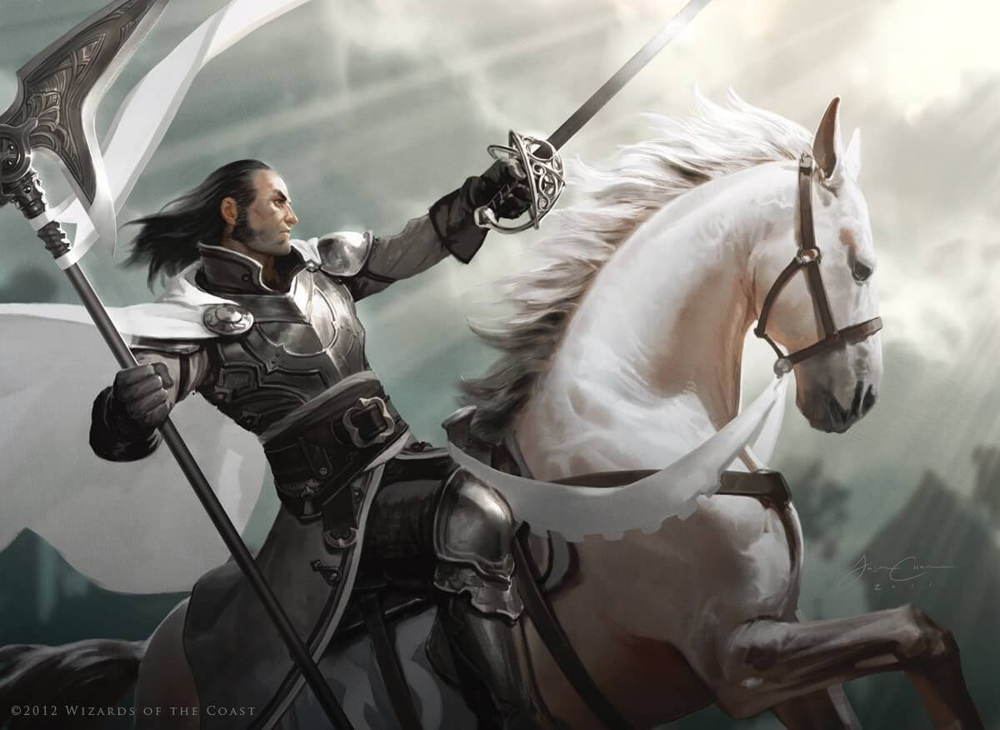

Son una clase con mucha vida, gran armadura, con una capacidad de daño increible y un poco de versatilidad magica de apoyo.
Un paladín es devoto a un dios y gracías a ese voto de creencia con él, consigue sus poderes. Tanques poderosos que son la cara del grupo, carismáticos y fuertes, con magia de apoyo, capaces de curar, revivir y dar pequeñas ayudas, son clases sencillas de jugar y bastante seguras, eso si, no rompais la confianza de vuestro dios..... o si?